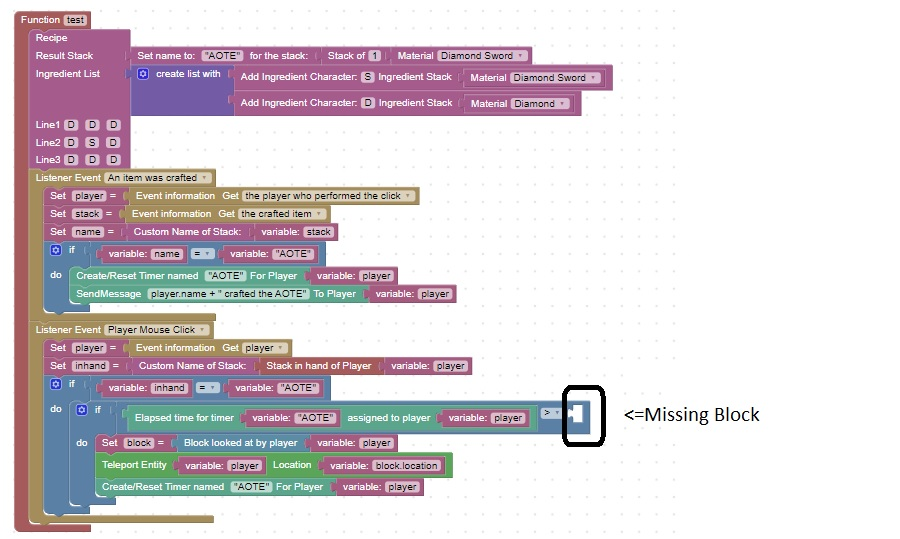

Homework: Craft the AOTE and program its special ability
Imagine that in your game there is a special sword called the AOTE.
When you you hold the sword in your hand and right or left click, you will be teleported to the block you are looking at
Since this is a very op function, there is a cool-down period.
Below it the code that creates a recipe for AOTE and is missing a block that complete the cool-down function
Change the recipe to include Ender Pearls, and Blaze Rod, and complete the cool-down logic.
Test out your code to make sure it behaves the way you expect.
